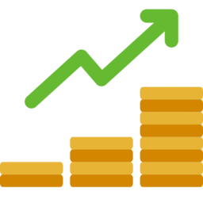

Es una estrategia financiera en la que se destina capital a un activo, negocio o proyecto con el objetivo de obtener ganancias a largo plazo.
Cuando se realiza una inversión se asume un coste de oportunidad al renunciar a esos recursos en el presente para lograr el beneficio futuro, el cual es incierto. Por ello cuando se realiza una inversión se está asumiendo cierto riesgo. Pero a cambio se espera obtener rendimientos por esa inversión, ganando más de lo que se invirtió.
Para disponer de dinero para invertir es necesario haber tenido ingresos y ahorrado previamente parte de estos ingresos.

1- Crecimiento del patrimonio:
La inversión puede ayudar a hacer crecer tu patrimonio y generar ganancias en el tiempo.
2- Generación de ingresos pasivos:
Al invertir en activos que generan ingresos, como acciones que pagan dividendos o propiedades que se alquilan,
puedes obtener ingresos pasivos adicionales.
3- Diversificación:
La inversión te permite diversificar tus fuentes de ingresos y disminuir el riesgo al distribuir tus activos en diferentes clases de inversión y
sectores económicos.
4- Protección contra la inflación:
Al invertir, puedes buscar activos que ofrezcan rendimientos superiores a la tasa de inflación,
lo que ayuda a preservar el poder adquisitivo de tu dinero.
1-Riesgo y rendimiento:
Existe una relación directa entre el riesgo y
el rendimiento potencial de una inversión. En general, las inversiones más arriesgadas tienen el potencial de generar mayores rendimientos,
pero también conllevan una mayor posibilidad de pérdida.
2- Horizonte temporal:
El horizonte temporal es el período de tiempo durante el cual planeas mantener tu inversión.
Puedes elegir inversiones a corto plazo, como bonos,
o a largo plazo, como acciones o bienes raíces.
3- Diversificación:
La diversificación implica invertir en una variedad de activos para reducir el riesgo.
Al diversificar, puedes distribuir tu dinero en diferentes clases de activos,
regiones geográficas o sectores económicos.
4- Análisis de riesgo y retorno:
Antes de realizar una inversión,
es importante realizar un análisis de riesgo y retorno.
Evalúa los posibles riesgos asociados con la inversión y
compáralos con las expectativas de retorno.
5- Liquidez:
La liquidez se refiere a la facilidad con la que puedes convertir una inversión en efectivo.
Algunas inversiones son más líquidas que otras,
lo que significa que puedes venderlas rápidamente sin incurrir en grandes costos.

1- Acciones:
Al comprar acciones, te conviertes en propietario de una parte de una empresa y
puedes beneficiarte de su crecimiento y dividendos.
2- Bonos:
Los bonos son deudas emitidas por gobiernos, empresas o entidades.
Al comprar un bono, estás prestando dinero a cambio de pagos de intereses regulares y
la devolución del capital al vencimiento.
3- Fondos de inversión:
Los fondos de inversión agrupan el dinero de múltiples inversionistas
para invertir en una cartera diversificada de activos,
gestionados por profesionales.
4- Bienes raíces:
Invertir en propiedades comerciales o residenciales para alquilar o vender es otra opción.
Los bienes raíces pueden generar ingresos regulares y apreciación del valor a largo plazo.
5- Mercado de divisas (Forex):
El mercado de divisas implica la compra y
venta de monedas extranjeras con el objetivo de obtener ganancias